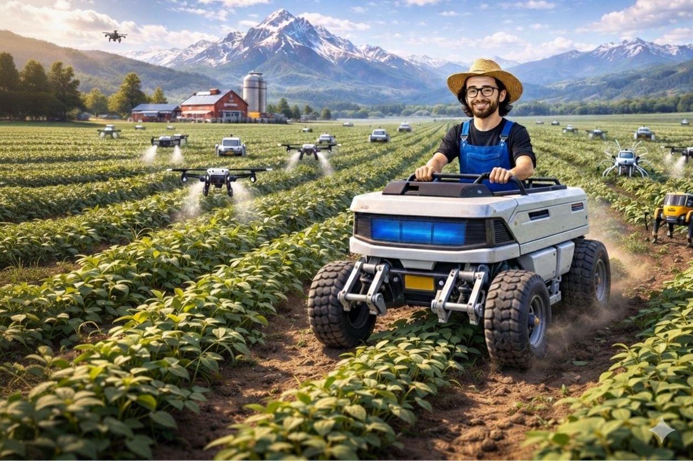

Beef prices are climbing once again, not merely as a temporary spike but as part of a deeper, structural trend. While much attention swirls around the latest technological breakthroughs, a quieter but significant shift is taking place in agriculture.
While headlines are often dominated by the latest tech innovations or economic forecasts, a quiet transformation is occurring in the agricultural sector. This shift, though not as immediately visible as AI developments in other industries, is crucial. The agricultural systems underpinning our food supply are facing stress from various fronts, including climate patterns and resource limitations. This matters profoundly because agriculture directly affects the prices of everyday essentials, like beef.
At a granular level, the application of AI in agriculture is beginning to reshape how we manage resources and predict environmental changes. AI technologies are being used for tasks such as crop monitoring and soil analysis, which allow for more precise resource allocation. For instance, by leveraging AI, farmers can optimize water usage and improve crop yields, creating a more efficient agricultural process.
Simultaneously, AI aids in tracking drought patterns and environmental stressors, enabling earlier intervention and adaptation strategies. This not only enhances the resilience of crop production but also impacts the entire supply chain. When the inputs for livestock—feed, water, and land—are managed more effectively, it can lead to a more stable beef production system. This stability is critical because it reduces the volatility in meat prices that consumers experience on their grocery bills.
The importance of stabilizing beef prices extends beyond mere cost control; it touches on food security and economic stability. High beef prices are often a clear indicator of systemic pressure within agricultural systems. By adopting smarter, AI-driven farming techniques, there is potential to mitigate these pressures.
While AI’s application in agriculture might not directly lower beef prices overnight, it can create a more resilient supply chain. This means that over time, the volatility in prices that consumers face could decrease, leading to more predictable grocery budgeting. However, it's also important to acknowledge the limitations. The integration of AI in agriculture requires investment and adaptation, which may take time before tangible benefits are fully realized.
Looking ahead, the trajectory of agricultural AI suggests a future where farming is not just more technologically advanced but also more stable and sustainable. As these technologies mature and become more widely adopted, they could play a significant role in smoothing out the fluctuations in food prices, making them less susceptible to sudden spikes caused by environmental or market shifts.
Yet, as with any technological adoption, the pace of change will vary across different regions and types of agriculture. The journey towards a more stable food supply system is gradual, but the seeds of change are already quietly taking root.
Dr.WinMac explores the infrastructure and automation changes that affect everyone, explained without jargon.
Back to Blog